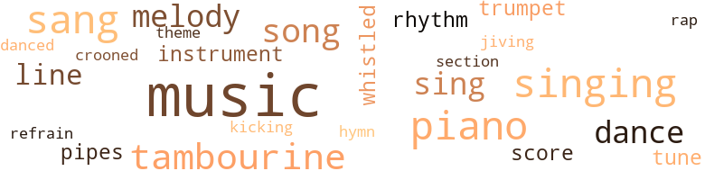
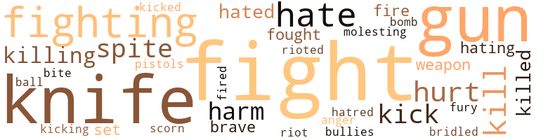
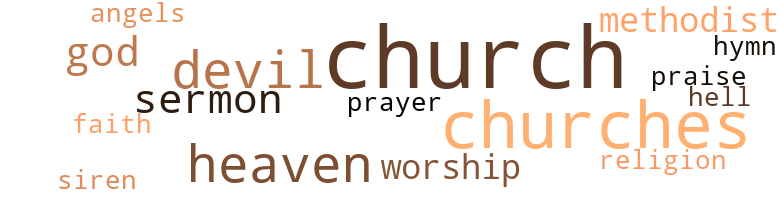

Harlem Summer, by Vroman, Mary Elizabeth (1964)
101 music-related terms matched in this text.
Most frequent terms in this topic: music (22); sang (8); singing (8); piano (8); song (6)
cornet.n.01
Definition: a brass musical instrument with a brilliant tone; has a narrow tube and a flared bell and is played by means of valves
| word | sentence |
|---|---|
| trumpet | The notes from the trumpet in the lead were pure and strong . |
| trumpet | Louder and louder it swelled , filling the room with sound - now sweet , now strong and stirring ; now making little runs and trills , now booming with trumpet sounds - till suddenly it stopped , and the piano notes began again . |
croon.v.01
Definition: sing softly
| word | sentence |
|---|---|
| crooned | " That 's right , Come to , baby , " Dippy crooned . |
dance.n.01
Definition: an artistic form of nonverbal communication
| word | sentence |
|---|---|
| dance | They did a soft-shoe dance to an old tune . |
dance.n.02
Definition: a party of people assembled for dancing
| word | sentence |
|---|---|
| dance | The three men in the dance team were not young . |
dance.v.03
Definition: skip, leap, or move up and down or sideways
| word | sentence |
|---|---|
| dance | " Man , you ca n't dance a lick ! |
| dance | " I do n't like to dance . " |
| dance | He really does n't like to dance . " |
| danced | But the books I read in school made it seem that black slaves just grinned and danced and sang - so happy to be slaves . |
hymn.n.01
Definition: a song of praise (to God or to a saint or to a nation)
| word | sentence |
|---|---|
| hymn | The woman led with the strong melody of an old hymn . |
jive.v.01
Definition: dance to jive music; dance the jive
| word | sentence |
|---|---|
| jiving | Some kids in a comer were jiving it up to the music that came from the jukebox . |
kick.v.04
Definition: kick a leg up
| word | sentence |
|---|---|
| kicking | And you 're supposed to be cured of kicking now , King . " |
music.n.01
Definition: an artistic form of auditory communication incorporating instrumental or vocal tones in a structured and continuous manner
| word | sentence |
|---|---|
| music | The music grew louder . |
| music | The music next door had started again - the same piece : " When the summer is over , will it be the same ? |
| music | The music was just as loud , but it was n't Deena 's music . |
| music | The music was just as loud , but it was n't Deena 's music . |
| music | " Mr. Mason , you like music ? " |
| music | My husband is crazy for music - all kinds . |
| music | The two men talked about music and musicians , and listened to the records as if they were old friends . |
| music | But Paul Mason 's got a good mind , and he knows his music . " |
| music | The music seemed to be right there in the store . |
| music | Some kids in a comer were jiving it up to the music that came from the jukebox . |
| music | The music was loud and " out of sight . " |
| music | Shaking their tambourines in time to the music and the singing , they returned down the side aisles to their seats . |
| music | Aunt Candy , beside John , was also singing and moving with the music . |
| music | Un - der it all the music continued . |
| music | The man at the organ seemed to take the words that Mother Strong was speaking and turn them into music . |
| music | Soft music was coming from the dining room . |
| music | Uncle Ernie liked music . |
| music | From the record shop next door came the sudden loud blare of rock-and-roll music . |
| music | The music blared away . |
| music | The music started again . |
| music | The music was pretty loud . |
| music | The music next door stopped . |
musical_instrument.n.01
Definition: any of various devices or contrivances that can be used to produce musical tones or sounds
| word | sentence |
|---|---|
| instrument | It seemed as though it were one instrument be - ing played . |
| instruments | The whole church was rocking now with the sound of the voices and the instruments . |
piano.n.01
Definition: a keyboard instrument that is played by depressing keys that cause hammers to strike tuned strings and produce sounds
| word | sentence |
|---|---|
| piano | On the other side of the altar was a piano . |
| piano | There were benches surrounding the organ and the piano , mak - ing the whole sanctuary U-shaped . |
| piano | The man seated himself at the organ , and the woman sat down at the piano . |
| piano | Louder and louder it swelled , filling the room with sound - now sweet , now strong and stirring ; now making little runs and trills , now booming with trumpet sounds - till suddenly it stopped , and the piano notes began again . |
| piano | As at a signal , the organ and piano picked up the melody on perfect pitch with the congregation , but softly , so that the voices were in the lead . |
| piano | The men took the benches by the organ , and the women occupied the seats by the piano . |
| piano | The woman at the piano did not join in . |
| piano | The piano beat was soft and steady . |
pipe.n.04
Definition: a tubular wind instrument
| word | sentence |
|---|---|
| pipes | John was startled to see organ pipes at the back of the church . |
| pipes | The pipes meant that the organ had expensive chimes . |
rap.n.05
Definition: genre of African-American music of the 1980s and 1990s in which rhyming lyrics are chanted to a musical accompaniment; several forms of rap have emerged
| word | sentence |
|---|---|
| rap | What am I supposed to be getting out of this , besides helping you to take the rap ? " |
refrain.n.01
Definition: the part of a song where a soloist is joined by a group of singers
| word | sentence |
|---|---|
| refrain | Strangely , the refrain was softer . |
rhythm.n.04
Definition: the arrangement of spoken words alternating stressed and unstressed elements
| word | sentence |
|---|---|
| rhythm | People were snapping their fingers and moving their shoulders to the rhythm . |
| rhythm | From time to time a couple of them would break into some fancy steps to the rhythm . |
score.n.02
Definition: a written form of a musical composition; parts for different instruments appear on separate staves on large pages
| word | sentence |
|---|---|
| score | " It 's a big score , baby ! |
| score | I 'll just make sure we even up the score , that 's all . " |
section.n.01
Definition: a self-contained part of a larger composition (written or musical)
| word | sentence |
|---|---|
| section | She sat down in the first seat up front in the colored section . |
sing.v.02
Definition: produce tones with the voice
| word | sentence |
|---|---|
| sing | With a single chord from the band he began to sing : " Baby , think about me ! |
| sang | As he sang , the other three picked up each line of the song in a separate harmony . |
| sang | They moved their bodies as they sang - their hands , their feet , their heads - as if they were one person . |
| sang | She sang very loudly ; but the audience did n't seem to mind her singing . |
| sing | But when he started to sing it was different . |
| sang | " When the summer is over , " he sang . |
| sang | The three of us played games and sang . |
| sing | " Some Negroes ca n't sing . |
| sing | Suddenly , a clear , sweet tenor voice began to sing : " Lord , oh , hear me praying , Lord ! |
| sang | People were sway - ing as they sang . |
| sang | After the collections , the choir sang . |
| sing | Someone in the back started to sing : " My Father is rich in houses and lands ... " Others took up the song . |
| sang | But the books I read in school made it seem that black slaves just grinned and danced and sang - so happy to be slaves . |
singing.n.01
Definition: the act of singing vocal music
| word | sentence |
|---|---|
| singing | Some people were singing along with it . |
| singing | When they broke into a fancy step , singing all the while , a girl called out , " Do it pretty for me , you-all ! " |
| singing | She sang very loudly ; but the audience did n't seem to mind her singing . |
| singing | Uncle Ernie 's eyes were closed , and his body moved in time to the song he was singing . |
| singing | John watched in amazement while the people came forward in twos , from the back first , singing as they came , down the center aisle . |
| singing | Shaking their tambourines in time to the music and the singing , they returned down the side aisles to their seats . |
| singing | Aunt Candy , beside John , was also singing and moving with the music . |
| singing | A man 's voice was singing . |
song.n.01
Definition: a short musical composition with words
| word | sentence |
|---|---|
| song | " That 's the Apollo theme song , " Deena whispered . |
| song | As he sang , the other three picked up each line of the song in a separate harmony . |
| song | Uncle Ernie 's eyes were closed , and his body moved in time to the song he was singing . |
| song | Obediently , John opened his mouth and joined in the song that he did n't know too well . |
| song | Suddenly , at a signal from Uncle Ernie , the song was over . |
| song | Someone in the back started to sing : " My Father is rich in houses and lands ... " Others took up the song . |
tambourine.n.01
Definition: a shallow drum with a single drumhead and with metallic disks in the sides
| word | sentence |
|---|---|
| tambourine | Reaching the front , each person turned to pick up a tambourine from the front benches . |
| tambourines | Shaking their tambourines in time to the music and the singing , they returned down the side aisles to their seats . |
| tambourines | John wondered why he had n't noticed as he came in that the front seats were filled with tambourines . |
| tambourines | " Sing ! " she ordered in a whisper , as they rose to get their tambourines . |
| tambourine | He shook his tambourine with the rest . |
| tambourine | Uncle Ernie , leading them , was moving up and down , a tambourine in each hand . |
| tambourine | " Ai n't it the truth ! " an old lady screamed , rattling her tambourine . |
theme.n.03
Definition: (music) melodic subject of a musical composition
| word | sentence |
|---|---|
| theme | " That 's the Apollo theme song , " Deena whispered . |
tune.n.01
Definition: a succession of notes forming a distinctive sequence
| word | sentence |
|---|---|
| line | When they reached the Apollo this time , there was a long line of people waiting for tickets . |
| tune | It played an old tune : " I Think You 're Wonderful . " |
| line | As he sang , the other three picked up each line of the song in a separate harmony . |
| tune | They did a soft-shoe dance to an old tune . |
| melody | The woman led with the strong melody of an old hymn . |
| melody | The man underscored the melody with soft chords on the or - gan . |
| melody | After a while , the woman stopped playing and the organ picked up the melody . |
| melody | This time , soft organ chimes accompanied the melody . |
| melody | As at a signal , the organ and piano picked up the melody on perfect pitch with the congregation , but softly , so that the voices were in the lead . |
| line | You go to the nearest place that 's open , where you do n't have to stand in line . |
| line | Then you 'd have to worry about keeping her in line . |
whistle.v.01
Definition: make whistling sounds
| word | sentence |
|---|---|
| whistled | The men in the audience whistled . |
| whistled | Mark whistled . |
158 violence-related terms matched in this text.
Most frequent terms in this topic: knife (21); gun (20); fight (19); fighting (15); hate (9)
anger.n.01
Definition: a strong emotion; a feeling that is oriented toward some real or supposed grievance
| word | sentence |
|---|---|
| anger | She turned her anger on him . |
bombard.v.02
Definition: throw bombs at or attack with bombs
| word | sentence |
|---|---|
| bomb | Down home , you talk too much and they bomb your home or something . |
bridle.v.01
Definition: anger or take offense
| word | sentence |
|---|---|
| bridled | Mark bridled . |
contemn.v.01
Definition: look down on with disdain
| word | sentence |
|---|---|
| scorn | There was scorn in Mark 's look . |
fight.n.02
Definition: the act of fighting; any contest or struggle
| word | sentence |
|---|---|
| Fighting | Fighting on the corner of One-twenty-fifth and Seventh , " the older , tough-look - ing officer answered . |
| fighting | But no more fighting , you hear ? " |
fight.n.05
Definition: a boxing or wrestling match
| word | sentence |
|---|---|
| fights | He did n't like this talk of hold - ups and fights . |
| fights | " Oh , he got into a few fights , as small boys do , " Mr. Mason said . |
| fight | Funny thing is , he had that one big fight , and that was enough . |
| fight | And it 's why the people fight and riot . |
| fight | All I thought was that a fight was starting and I had to get out of the way . |
| fight | Like I said , when the fight started , I just left . |
| fight | Do n't no civilized people fight with their heads , nor with no sticks neither . |
fight.v.02
Definition: fight against or resist strongly
| word | sentence |
|---|---|
| fight | Now you 'll have someone else to fight it out for you the next time they hold up the store . " |
| fight | The people used their own lawyers to help fight their case in the courts . |
| fought | While the case was being fought in the courts , the people refused to ride the buses . |
| fighting | " I do believe that there are better ways of fighting than with my fists , " he said quietly . |
| fight | You know how to fight , John ? " |
| fight | " Every Satur - day night we fight the great black-white battle on these four corners of Harlem Square . " |
| fight | I 'm not afraid to fight . |
| fighting | " Old Paul taught me stick fighting almost before I could walk . " |
| fighting | " Stick fighting ? |
| fighting | In Barbados they have a way of fighting with sticks . |
| fight | I do n't want to fight with you , or anybody , " he added . |
| fighting | Also , he did not believe in fighting for civil rights in this country , so he would n't work with other Negro organizations . |
| fight | You 'll have to fight somebody before the summer ends . " |
| fight | Down home in the West Indies , we often fight with the head . |
| fighting | He was only fighting with his fists and his head . " |
| fighting | John could see it happening in his mind - the small boy fighting like the devil ; the people egging him on . |
| fight | You see , John , the truth is that Mark never really liked to fight . |
| fighting | We all know what we 're fighting for , and we feel we know how to do it . |
| fighting | But there 's no sense in getting angry and fighting about every little thing , is there ? |
| fight | He was giving his views about Negro soldiers being sent abroad to fight . |
| fighting | " Black boys got no right to be over there , fighting and dying in the white man 's war ! " |
| fighting | What was he doing there , fighting on the streets of Harlem ? |
| fighting | He sure is one fighting fool ! " |
| fighting | I heard some - body say you was just a boy , and that you 'd been fighting with your bare hands against a knife . |
| fight | No - body respects you when you do n't fight back . " |
| fighting | " I have always believed in fighting back . |
| fight | But if you make your - self strong to fight back at the ugliness and the cruelty in the best way you can , that can make your life kind of beautiful . |
| fight | Finally he said , gruffly , " You sure do n't fight fair . |
| fight | " Who taught you to fight ? " |
| fought | Got himself hanged because he fought against slavery . |
fury.n.01
Definition: a feeling of intense anger
| word | sentence |
|---|---|
| fury | Dippy 's eyes widened in sudden fury , " Yeah ? |
gun.n.01
Definition: a weapon that discharges a missile at high velocity (especially from a metal tube or barrel)
| word | sentence |
|---|---|
| gun | It seemed that once in broad daylight , a man came pointing a gun and demanding money . |
| gun | As he turned , Mark used the stick to knock the gun out of the man 's hand . |
| gun | Mark grabbed the gun and the man ran . |
| gun | The small gun in his hand was pointed at John 's chest . |
| gun | The gun was held so that no passerby could see it . |
| gun | Dippy slipped the hand with the gun into his pocket , and limped over to stand in the spot behind the door where Duke had stood . |
| gun | He withdrew the gun again and held it rather loosely in his hand . |
| gun | " Just carrying the gun alone would get you a real long stretch . |
| gun | From behind the door , Dippy hit him on the head with the butt of his gun . |
| gun | " This here 's a gun , " Dippy said . |
| gun | And he had heard the thud of the gun as it hit the floor . |
| gun | The gun was on the floor by the door . |
| gun | He went over and looked down at the gun thoughtfully . |
| gun | Mark was still looking at the gun . |
| gun | " You think he 's gon na give us back that gun ? |
| gun | He took a large handkerchief from his pocket and stooped down to pick up the gun carefully . |
| gun | You two know if this old gun did any shooting lately ? " |
| gun | " Man , that gun 's so old , we was n't sure it could fire if we tried ! |
| gun | Mark switched the lights back on and stood in the doorway , the gun still in his hand . |
| gun | He dropped the the gun into the box with the head . |
hate.n.01
Definition: the emotion of intense dislike; a feeling of dislike so strong that it demands action
| word | sentence |
|---|---|
| hatred | In his eyes was an expres - sion of pure and open hatred . |
| hate | Love is the only thing that can heal the world of its hate and evil . |
| hate | The look that Dippy threw Mark over his shoulder was still puzzled , but John could find no hate in it . |
hate.v.01
Definition: dislike intensely; feel antipathy or aversion towards
| word | sentence |
|---|---|
| hated | Young John hated his father then . |
| hated | But Dippy hated Mark . |
| hate | But I 'll bet a nickel you do n't hate him , either . |
| hating | You 're not the hating kind , Mark . " |
| hating | " I 've never had as much personal reason for hating as you . |
| hated | " There have been a few times that I 've hated Whitey , " John admitted . |
| hate | " For a long time we 'd been taught to love them and hate ourselves . |
| hate | If you got ta hate somebody , hate the man ! |
| hate | If you got ta hate somebody , hate the man ! |
| hates | He hates the word Negro , because he says it 's just another language trick the white man invented to make us feel inferior . |
| hate | I hate to tell you this , but I must . |
| hate | Try not to hate peo - ple . |
| hate | " Yeah , but you ca n't hate Mark as bad as that . |
injury.n.01
Definition: any physical damage to the body caused by violence or accident or fracture etc.
| word | sentence |
|---|---|
| harm | But Uncle Ernie did n't mean any harm . ' |
| harm | " Those speakers do more good than harm , " Mark declared . |
| hurt | By the time John reached the apartment , his head hurt . |
| harm | She does n't mean any harm . |
| harm | " Your aunt did n't mean no harm reading your letters . |
| harm | " I did n't mean no harm , Johnnie , " Aunt Candy said , blowing her nose hard . |
| hurt | That hurt ; but he did n't release his hold . |
kick.v.04
Definition: kick a leg up
| word | sentence |
|---|---|
| kicking | And you 're supposed to be cured of kicking now , King . " |
kick_back.v.02
Definition: spring back, as from a forceful thrust
| word | sentence |
|---|---|
| kick | Then the hoy comes at him to kick him in the face . " |
| kicks | Not even real kicks . |
| kick | This is a poor sorry foot ; and this time it 's gon na kick your brains out ! |
| kick | " So kick me , " Mark said between clenched teeth . |
| kicked | Dippy kicked . |
| kicks | " That lame foot kicks pretty good ! |
| Kick | Kick him again , Dippy , " He squealed . |
kill.v.10
Definition: cause the death of, without intention
| word | sentence |
|---|---|
| kill | Mark 'll kill you , if you fool with me ! " |
| kill | You can put out a man 's eye , or even kill him with a stick . |
| killed | His father and mother had been killed in an automobile accident when Mark was ten . |
| kills | And here comes this fool drunk in another car , and kills all three of them ! " |
| kill | You-all ought to kill him ! ' |
| killed | It was a Negro who killed my parents . " |
| kill | I 'm gon na kill you when I gets you home ! |
| killed | Of course they killed him in the end . |
| kill | You planning to kill Mark with that thing ? |
| killing | Like that time upstate when I stood by you and kept that crazy kid from killing you . " |
| killing | But when I 'm gone , who 's gon na keep your old man from killing you when his fits come on him ? " |
| kill | His father had recommended that they kill him , Old Paul had said . |
| kill | Up here they do n't kill you . " |
killing.n.02
Definition: the act of terminating a life
| word | sentence |
|---|---|
| killing | When you see the black man cheating and lying , and killing , who taught him , brothers ? |
| killing | " There 's many ways of killing , " Mark said . |
knife.n.02
Definition: a weapon with a handle and blade with a sharp point
| word | sentence |
|---|---|
| knife | " Oh , that was only some stupid kid with a knife . |
| knife | The knife was out now , making a shining arc as the man leaped at him . |
| knife | " I thought I saw a knife , " a policeman said thought - fully . |
| knife | " Either of them have a knife or any weapon ? " he asked the crowd . |
| knife | Surely they 'd seen the knife . |
| knife | What had happened to the knife , he wondered , as the po - licemen shoved him into the car next to the man . |
| knife | I thought I saw a knife before we got to them . |
| knife | And we did n't find any knife on Jack - man , either . |
| knife | I heard some - body say you was just a boy , and that you 'd been fighting with your bare hands against a knife . |
| knife | " When Jackman came at you with a knife , you just turned the other cheek . " |
| knife | When he reached the counter , John heard the flick of his knife . |
| knife | But Duke never took his eyes off him , and the knife at his side was steady . |
| knife | I ca n't stop you with this ape and his knife next to me . |
| knife | Duke growled and made a threatening gesture with the knife , at the word " ape . " |
| knife | John felt the knife point through his shirt now , close to the skin . |
| knife | He jabbed the knife a little more into John 's side . |
| knife | Duke held the knife with his left hand to John 's right side . |
| knife | Duke and knife or no , he was n't gon na let it happen . |
| knife | " Drop the knife ! " |
| knife | When Duke dropped the knife , John stepped hack and hit him twice , both times with a right to the chin . |
| knife | That Duke was ready to go crazy with his knife . " |
malice.n.01
Definition: feeling a need to see others suffer
| word | sentence |
|---|---|
| spite | In spite of the furniture , I do n't think Uncle Ernie could manage a bigger rent . |
| spite | Some young punk starts a light , just for spite ! |
| spite | That 's what it is - spite work ! " |
| spite | He had learned to love them , in spite of everything . |
| spite | In spite of his white hair , Paul Mason did n't look old . |
| spite | In spite of their strange ways , they were his friends . |
molest.v.01
Definition: harass or assault sexually; make indecent advances to
| word | sentence |
|---|---|
| Molesting | Molesting the woman , with all those people around ? |
musket_ball.n.01
Definition: a solid projectile that is shot by a musket
| word | sentence |
|---|---|
| ball | He 's having a ball keeping us divided . |
open_fire.v.01
Definition: start firing a weapon
| word | sentence |
|---|---|
| fire | He was beginning to understand why Mr. Block did n't want to fire Mark . |
| fired | " When he takes it to the police , I do n't guess they 'll worry too much if it has n't been fired lately . |
| fire | " Man , that gun 's so old , we was n't sure it could fire if we tried ! |
pain.v.02
Definition: cause emotional anguish or make miserable
| word | sentence |
|---|---|
| hurt | And we ai n't gon na hurt you or your store . |
| hurt | But it hurt him . |
| hurt | A little fun wo n't hurt you . |
| hurt | He did n't want to hurt him anymore , and if it came to a show - down , that could happen . |
| hurt | " I made sure not to hurt him too much , " Mark said . |
pistol.n.01
Definition: a firearm that is held and fired with one hand
| word | sentence |
|---|---|
| pistols | They wore their tarts over their trousers , but John could see the slight bulge of their pistols at their waists . |
riot.n.01
Definition: a public act of violence by an unruly mob
| word | sentence |
|---|---|
| riot | And it 's why the people fight and riot . |
riot.v.01
Definition: take part in a riot; disturb the public peace by engaging in a riot
| word | sentence |
|---|---|
| rioted | People rioted in the streets here . |
sic.v.01
Definition: urge to attack someone
| word | sentence |
|---|---|
| set | " You could do worse , I guess , since you 're set on hiring somebody . |
| set | Be - sides , why are you so set on owning this place ? " |
sting.n.03
Definition: a painful wound caused by the thrust of an insect's stinger into skin
| word | sentence |
|---|---|
| bite | She took a small bite of the apple . |
strong-arm.v.02
Definition: be bossy towards
| word | sentence |
|---|---|
| bullies | Any - way , two bullies from his school waited for him when he left the store . |
weapon.n.01
Definition: any instrument or instrumentality used in fighting or hunting
| word | sentence |
|---|---|
| weapon | " Either of them have a knife or any weapon ? " he asked the crowd . |
| weapons | Dippy and Duke both started at the sound and gestured with their weapons . |
weather.v.01
Definition: face and withstand with courage
| word | sentence |
|---|---|
| brave | That night when I put him to bed , I did n't know what to say to him ; so I told him what a brave boy he was . |
| brave | " Ever since that time , Mark has been proving to me what a brave boy he is . |
54 religion-related terms matched in this text.
Most frequent terms in this topic: church (17); churches (9); devil (4); Heaven (3); sermon (3)
church.n.02
Definition: a place for public (especially Christian) worship
| word | sentence |
|---|---|
| church | She stayed home from church to prepare things . |
| church | That Sunday John went to church with his aunt and uncle . |
| church | Maybe you 'd rather go to your own church . |
| church | John was startled to see organ pipes at the back of the church . |
| churches | He had seen organs like that in more elaborate churches . |
| churches | This , then , was one of those churches where people got pretty emotional . |
| churches | There were plenty of churches like that at home . |
| church | A woman shouted from the back of the church . |
| church | The whole church was rocking now with the sound of the voices and the instruments . |
| church | The church had grown so large , Mother Strong said , that they just had to build a real church building . |
| church | There was a collection for the upkeep of the church . |
| churches | He wondered briefly what would happen if all the Negro churches in the city would put their money together to help the people . |
| churches | Mark had said that there were too many churches and too many church buildings . |
| church | Mark had said that there were too many churches and too many church buildings . |
| churches | Did the churches really help the people ? |
| church | Uncle Ernie is a deacon in his church . |
church.n.04
Definition: the body of people who attend or belong to a particular local church
| word | sentence |
|---|---|
| church | The church that they attended was on Lenox Ave - nue , upstairs over a store . |
| church | People were beginning to fill up the church when John arrived with the Matthews . |
| churches | To prove it , she often took her son to visit other churches . |
| church | The church had grown so large , Mother Strong said , that they just had to build a real church building . |
| church | " We in this church take care of our own . |
| churches | Whole lot of high-class churches ca n't say the same ! " |
| churches | But John supposed that difFerent kinds of people needed different kinds of churches . |
| church | The church rocked again with the gospel singing . |
| church | I went to church last Sunday with Aunt Candy and Uncle Ernie . |
| church | Her only recreation is at church . |
eden.n.01
Definition: any place of complete bliss and delight and peace
| word | sentence |
|---|---|
| heaven | ' Blessed are the poor in spirit ; for theirs is the kingdom of heaven . ' |
| Heaven | " But I want you to know that the Lord in Heaven sees all and knows all . |
| Heaven | But we 're all going to Heaven ! |
| Heaven | Would riches in Heaven wipe out the memory of all the poverty on earth ? |
| heaven | " Like the angels in heaven ! " |
god.n.03
Definition: a man of such superior qualities that he seems like a deity to other people
| word | sentence |
|---|---|
| God | And , thank God , there 's more of them around than the other kind . " |
| gods | Did you know that the ancient legends about African gods are just as interesting as those of ancient Greece and ancient Rome ? |
| God | John used to think that God looked something like that . |
hell.n.01
Definition: any place of pain and turmoil
| word | sentence |
|---|---|
| hell | " But they 'll go to hell in . |
hymn.n.01
Definition: a song of praise (to God or to a saint or to a nation)
| word | sentence |
|---|---|
| hymn | The woman led with the strong melody of an old hymn . |
methodist.n.01
Definition: a follower of Wesleyanism as practiced by the Methodist Church
| word | sentence |
|---|---|
| Methodists | I know you-all are Methodists down home . |
| Methodist | Mattie Lee was a staunch Methodist , but she believed that everyone should worship as he pleased . |
praise.n.02
Definition: offering words of homage as an act of worship
| word | sentence |
|---|---|
| praise | John was pleased with the praise . |
prayer.n.01
Definition: the act of communicating with a deity (especially as a petition or in adoration or contrition or thanksgiving)
| word | sentence |
|---|---|
| prayer | John no - ticed with surprise that his eyes were closed , and his hands were folded in his lap in the attitude of prayer . |
religion.n.01
Definition: a strong belief in a supernatural power or powers that control human destiny
| word | sentence |
|---|---|
| faith | They lost faith in Garvey and his plans . |
religion.n.02
Definition: an institution to express belief in a divine power
| word | sentence |
|---|---|
| Religion | Religion should be a joyous thing , he thought ; and wondered why he had n't thought about that before . |
saint.n.02
Definition: person of exceptional holiness
| word | sentence |
|---|---|
| angels | " Like the angels in heaven ! " |
satan.n.01
Definition: (Judeo-Christian and Islamic religions) chief spirit of evil and adversary of God; tempter of mankind; master of Hell
| word | sentence |
|---|---|
| devil | John could see it happening in his mind - the small boy fighting like the devil ; the people egging him on . |
| devils | " He ai n't free as long as he thinks it 's a privilege to sit , or walk , or ride with the white devils . |
| devil | He 's better in every way than the white devil . |
| devil | The white devil ! " |
| devil | The white devil has you so brainwashed , you do n't know which end is up ! |
sermon.n.02
Definition: a moralistic rebuke
| word | sentence |
|---|---|
| sermon | When the time came for the sermon , John listened intently . |
| sermon | As Mother Strong continued her sermon , many people began to shout for joy . |
| sermon | It was as if he were playing a duet with the sermon . |
siren.n.01
Definition: a sea nymph (part woman and part bird) supposed to lure sailors to destruction on the rocks where the nymphs lived
| word | sentence |
|---|---|
| siren | The squad car arrived with a loud screaming of the siren . |
worship.n.01
Definition: the activity of worshipping
| word | sentence |
|---|---|
| worship | Mattie Lee was a staunch Methodist , but she believed that everyone should worship as he pleased . |
| worship | She said that when he was ready , she wanted John to choose for himself his own form of worship . |